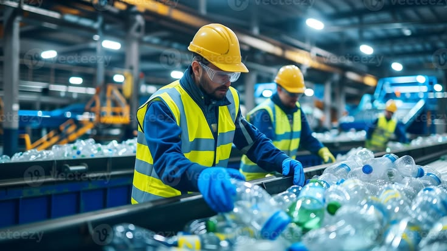
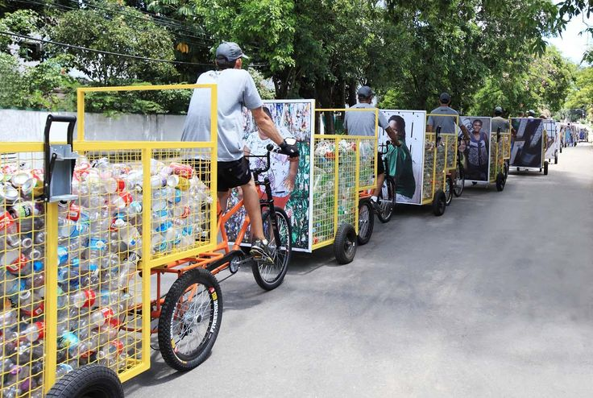
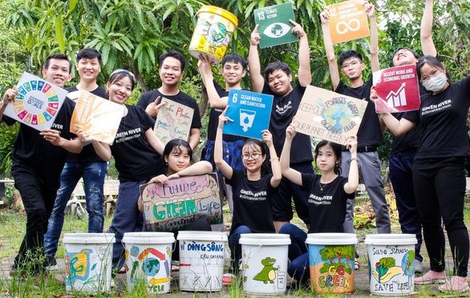

#1 Platform Pahlawan
Sampah Bukan Akhir, Jadikan Awal yang Baru
Bantu kurangi krisis sampah di Indonesia. Foto sampahmu dengan AI, setor ke mitra terdekat, dan dapatkan poin untuk belanja produk ramah lingkungan.
Mulai Siklusmu!


 +15K Pengguna
+15K Pengguna



100% Terverifikasi
Aman & Terpercaya